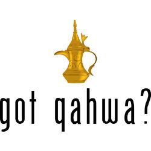
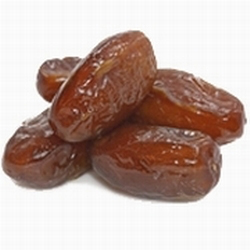

| Home | History | How to make | Social aspect | What makes Arabic coffee unique! |
|---|

Welcome to my website
About us:
* Here you will find the history of Arabic coffee also known as Qahwah and how to
make it.
* What is Qahwah made out of? Qahwah is made from green coffee beans
not brown, because it is very light coffee, and cardamom where it gives it a golden
color. Qahwah is served with a special pot called Dallah along with small coffee
cups called Fenjan.

* Each Arabian country has its own ways and tradition of making coffee. It
differentiates us from one another. For instance in Saudi Arabia, hospitality is very
important. One of our keys to a great hospitality is serving traditional Arabic Coffee,
that goes along with dates.
